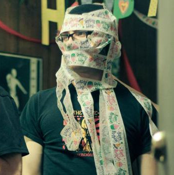

r. miller

r. miller was presumably born in Baltimore, MD sometime in the late 1980’s, but the only evidence that supports this is the author’s word, and as we know, his word is rather… Dubious. While still a child, he and his family relocated to some bumfuck, sqauresville type of place in southern Pennsylvania where the townsfolk possessed zero fashion sense and were made fat by a steady diet of Utz potato chips, Snyder’s pretzels, and Big Macs from one of the hamlet’s three McDonald’s. The author fell under a sleep spell sometime after puberty, and when he finally awoke, he had found that he had graduated high school and enrolled in college. After deciding that playing in a rock ‘n’ roll band would be much more fun than sitting in a lecture hall, the author abandoned his academic pursuits and for the next several years, made records and toured a good portion of the country in a rickety van with his two best friends. As is too often the case, however, dreams die a horrible and undignified death. The band broke up, and the author spent the next two and a half years mired in a quarter life crisis, spending his days and nights holed up in his bedroom surrounded by empty bottles of Canadian whisky and every season of Dawson’s Creek on DVD. Following a mystical LSD experience that led him to question the foundation of language, the author decided to quit his bellyaching and to start writing poetry and this, dear readers, brings us to the present.